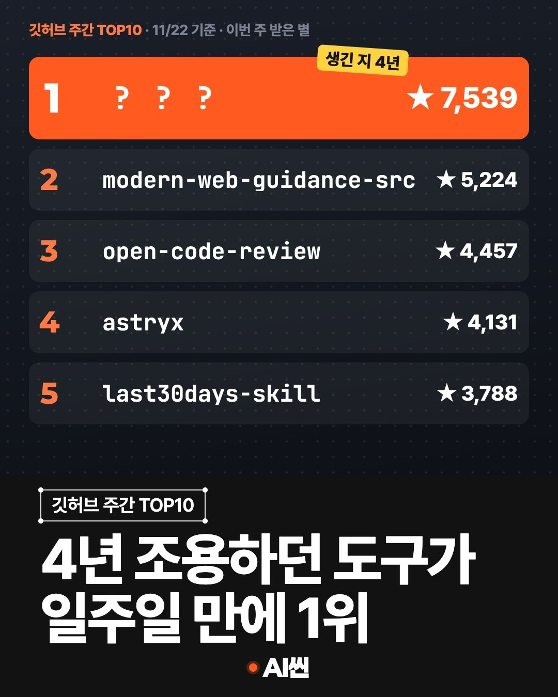

테크 · 인스타그램 · 2026-11-23
깃허브 주간 TOP10 (11/22 기준): 4년 된 유니버가 1위
11월 22일 기준 깃허브 주간 트렌딩을 이번 주 받은 별 순으로 정리한 결과, 2022년에 생긴 표·문서 편집기 SDK 유니버가 별 7,539개로 1위에 올랐고 지난주 TOP10 중 9개가 밀려났다.

- 1위 유니버(dream-num/univer)는 2022년 9월 생긴 저장소로, 지금까지 받은 별 31,095개의 약 4분의 1인 7,539개를 한 주에 받았다.
- 유니버는 엑셀 같은 표·워드 같은 문서 편집기를 내 서비스에 넣는 Office SDK로, 표·문서 편집·수식 계산·그리기 엔진은 Apache-2.0으로 공개되고 실시간 공동 편집·오피스 파일 변환·상업용 확장은 따로 라이선스다.
- 지난주 TOP10 중 이번 주에 남은 것은 메타의 아스트릭스(4위) 하나이며, 지난주 11위였던 플래노테이터는 7위로 올랐다.
- 2위 구글 크롬의 모던 웹 가이던스는 코딩 AI에게 요즘 웹 방식을 알려 주는 안내서 모음으로, 웹 기능 262개를 담고 명령 한 줄(Node 22 이상)로 설치한다.
- 3위 알리바바 오픈 코드 리뷰는 AI 코드 검사 도구로, 내가 고른 모델 주소로 내 코드가 보내진다.
- 9위 크롬 데브툴즈 MCP는 AI가 크롬을 열어 느린 곳을 찾으며, 브라우저 내용이 AI에 보이고 사용 통계가 기본으로 켜져 있다.
- 신인 러스트 애니싱은 11월 16일 생겨 6일 만에 별 7,383개를 받았으며, 기존 앱 동작을 기록해 두고 코딩 AI가 Rust로 한 조각씩 옮겨 쓰는 도구다.